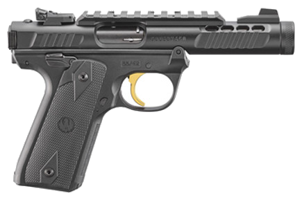
.22 LREntry Level$380–450
Ruger Mark IV 22/45
Target .22 with a 1911-style grip and one-button takedown; Guns & Ammo says you'd be hard pressed to find a better .22 for the money.
What should I buy?
A starting-point buying reference for new and entry-level owners — two solid picks for every gun type in every budget tier, each with the cartridge it feeds on and a quick take. Filter by type, caliber, or price.
Read first. A plain-language starting point, not legal, safety, or investment advice. Prices are ballpark U.S. street ranges cross-checked against retailer and auction listings in late 2025 / early 2026, and they move constantly — AK and lever-gun prices in particular have climbed. Fit, intended use, and your local laws matter more than any list here. Always buy through a licensed dealer, follow all federal, state, and local law, and get hands-on training.

Target .22 with a 1911-style grip and one-button takedown; Guns & Ammo says you'd be hard pressed to find a better .22 for the money.
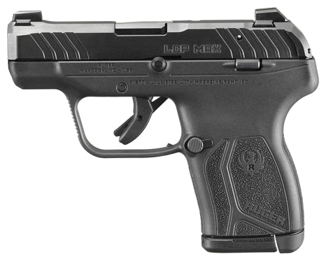
Tiny 10+1 pocket .380 at about 10 oz — reviewers call it the smallest gun that reliably holds that many rounds. Needs a tool to field-strip.
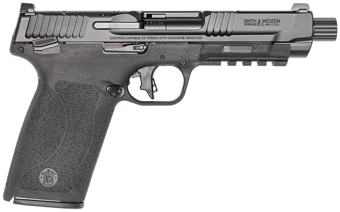
Usually the cheapest of the 5.7 pistols; Guns & Ammo called it the most comfortable 5.7 to shoot. High capacity, light recoil, thin aftermarket, pricey ammo.
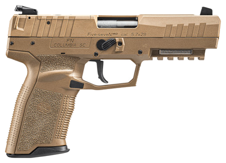
The original 5.7 pistol, now optics-ready — 20+1 of fast, flat-shooting ammo. Superb but the priciest 5.7, and the ammo is dear.
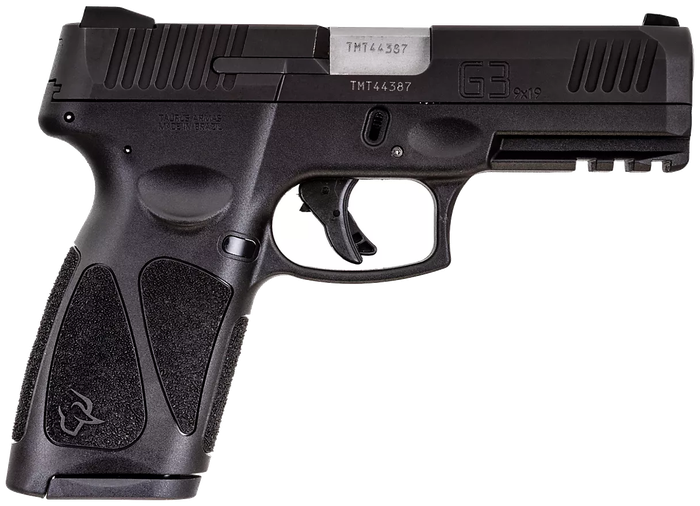
Full-size budget 9mm that undercuts almost everything; widely judged dependable for the money, with basic sights and trigger.
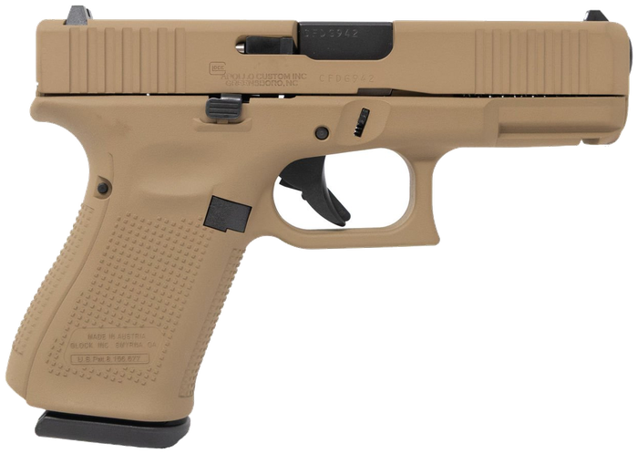
The benchmark 9mm — boringly reliable, holsters and parts everywhere. Weak factory sights are the usual gripe. (Canik's METE SFx is the value alternative near $525.)
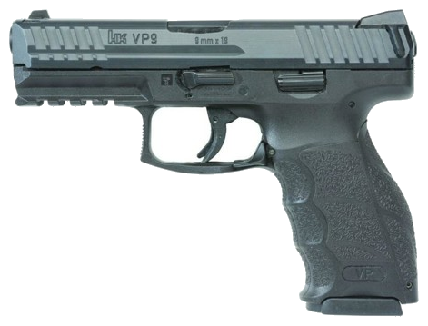
HK's striker gun with class-leading ergonomics and a paddle mag release; long praised for reliability and bright three-dot sights.
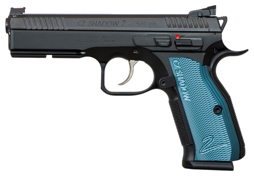
All-steel competition 9mm that soaks up recoil; a staple on the IPSC line. Heavy for carry, exceptional to shoot.
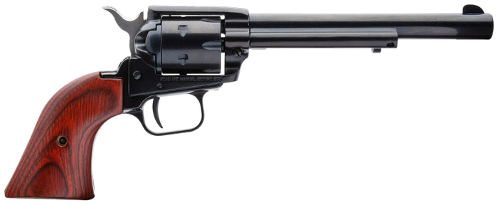
Dirt-cheap single-action .22 plinker. Not a defensive gun, but the lowest-cost way into revolvers and a fine trainer.
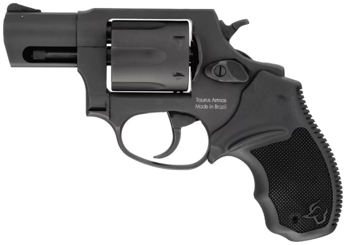
Six-shot .38 snub-nose, a budget alternative to the S&W J-frame; a common first carry revolver.
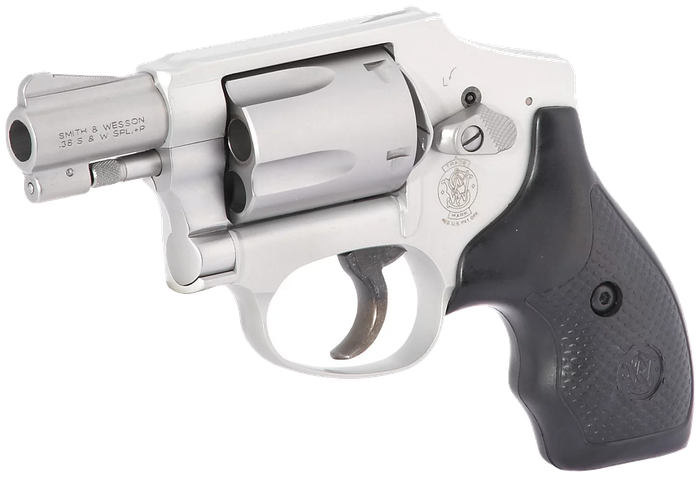
Hammerless Airweight J-frame rated for .38 +P; the classic snag-free pocket and backup revolver.
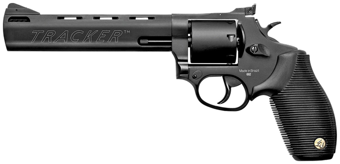
Seven-shot .357 with a swappable 9mm cylinder — a lot of versatility for the price.
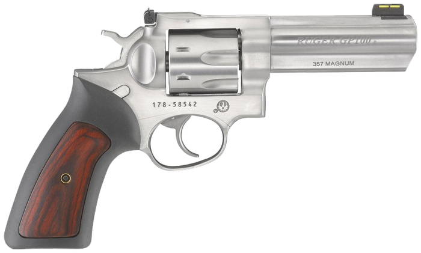
Tank-tough .357 built to digest full-power loads for life; heavier, but close to indestructible.
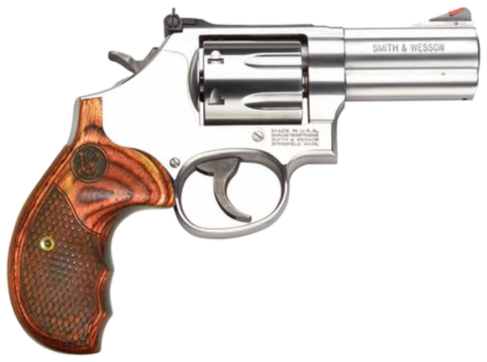
The reference .357 Magnum — L-frame, seven shots, the one most shooters measure others against.
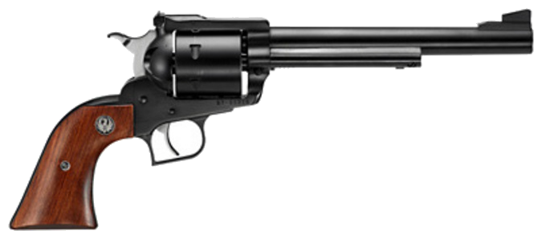
Single-action .44 Magnum for hunting and the range; classic Ruger strength at a fair price.
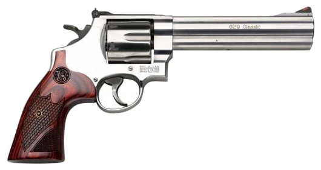
Stainless N-frame .44 Magnum; the serious handgun-hunting and big-bore standard.
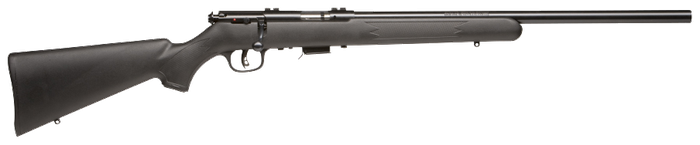
Accurate bolt-action .22 trainer with the AccuTrigger; the standard cheap rimfire for learning fundamentals.
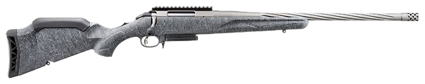
The current (Gen II) budget hunting bolt gun — threaded barrel with a muzzle brake, spiral-fluted bolt, and a trigger reviewers call outstanding for the price. Still the budget accuracy champ.
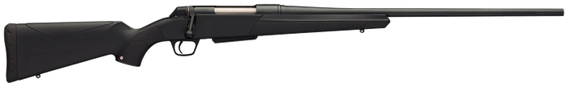
No-frills push-feed hunter known for out-of-box accuracy and a clean trigger.
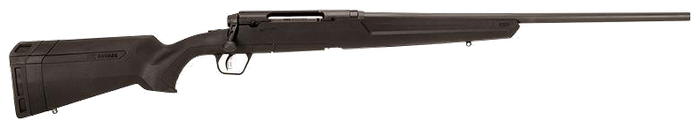
Entry hunting rifle with the AccuTrigger; 6.5 Creedmoor makes it an easy long-range starter.
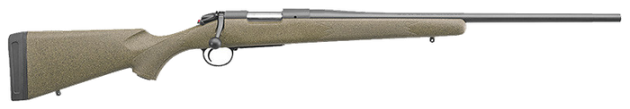
Spanish barrels with a strong accuracy reputation; a common step into precision shooting.
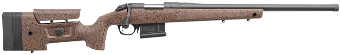
Mini-chassis stock and heavy barrel — a ready-made precision/PRS starter rifle.
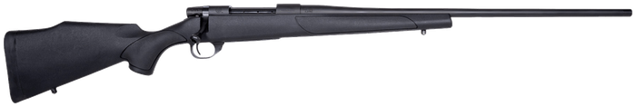
Backed by a sub-MOA guarantee; a proven, affordable magnum for elk and open country.
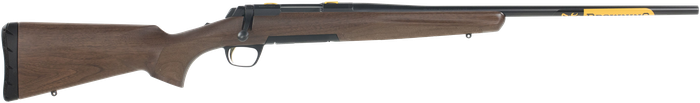
Refined action, crisp trigger, excellent fit; a lifetime magnum hunter.
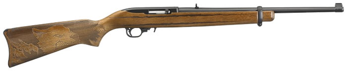
The default first rifle: cheap, reliable, endless aftermarket. Nearly everyone learns on one.
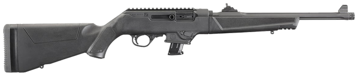
Takedown 9mm carbine that feeds Glock mags; soft-shooting and cheap to train with.
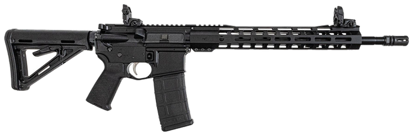
The go-to budget AR-15 — the gun that defined the cheap, functional 5.56; plain but reliable, and the easiest platform to learn and build on.
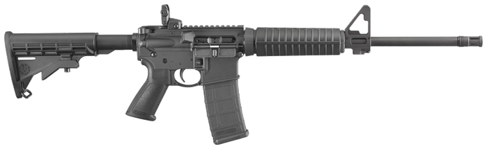
Reliable, no-frills AR-15 from a major maker; a safe first 5.56 that simply runs.
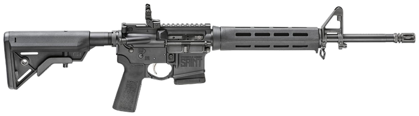
Mid-tier AR with better furniture and trigger; a well-rounded do-everything 5.56.
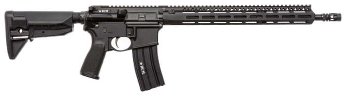
Duty-grade AR with a cold-hammer-forged barrel and real QC; what you buy when it has to work.
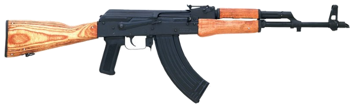
The classic imported Romanian AK; rated extremely reliable, accuracy merely okay — and prices have climbed a lot.
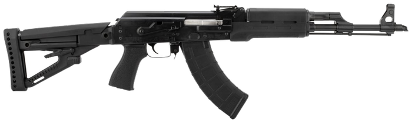
Heavy-duty Serbian AK with a bulged trunnion and chrome bore; widely called the best AK for the money.
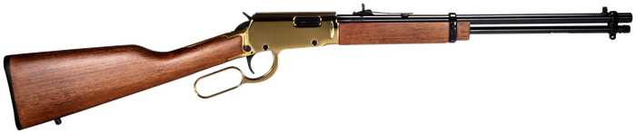
Budget .22 lever gun — a fun, cheap way to learn the manual of arms.
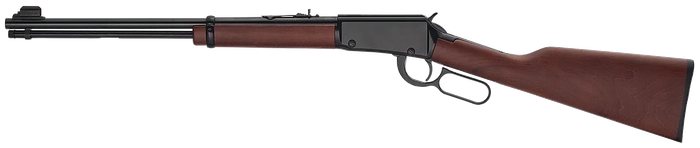
Smooth, well-finished .22 lever; a favorite youth trainer and plinker.
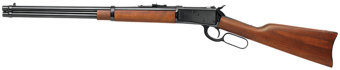
Brazilian copy of the Winchester 92; a handy carbine that shares ammo with a .357 revolver.
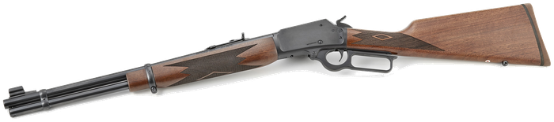
Ruger's revived .357 Marlin — fit and finish are back and better than the late Marlin-made guns.
The same slick 92 action in .44 Magnum — a hard-hitting woods and trail carbine.
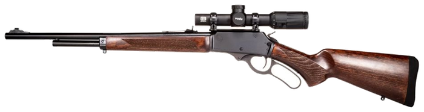
A Marlin-336-style .30-30 at roughly half the Marlin's price; reviewers praise its smooth action and finish.
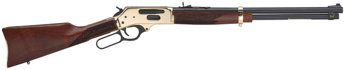
Side-gate .45-70 brush gun; stout, accurate, about seven pounds — a big-bore crowd-pleaser.
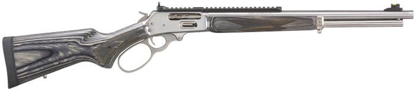
The reborn .45-70 guide gun; arguably the best lever being built today, with a price to match.
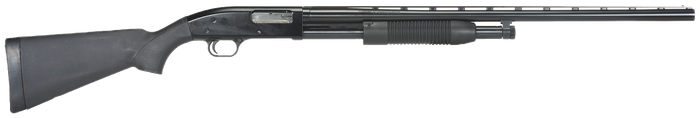
Mossberg's bargain pump — shares its guts with the 500 and just works. The cheapest serious shotgun.
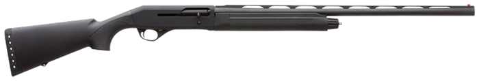
Benelli-inertia semi-auto on a budget; a solid waterfowl gun, occasionally picky with light target loads.
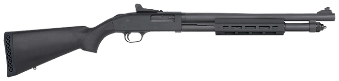
Heavy-barrel, metal-trigger-guard duty pump built to a military spec; a go-to defensive scattergun.
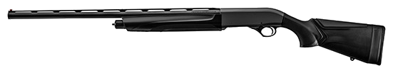
Reliable gas semi-auto with Beretta pedigree; soft-shooting and versatile for the money.
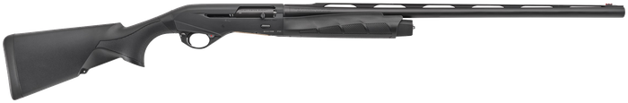
The benchmark inertia semi-auto — light, fast, and utterly reliable; a lifetime defensive/3-gun shotgun.
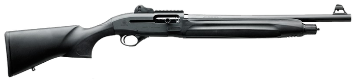
The gold-standard fighting shotgun: blazing-fast cycling, beloved by dedicated shotgun instructors.
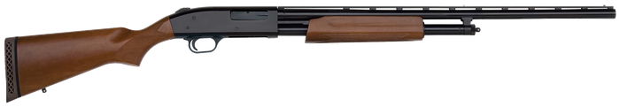
The ubiquitous pump: tang safety, millions sold. A 20-gauge makes an ideal first or youth gun.
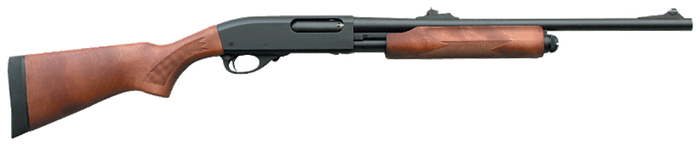
The classic American pump — smooth and tough, though post-move QC varies, so check the one you buy.
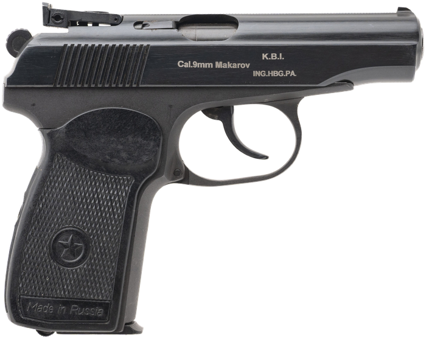
Simple, tough Soviet-bloc pistol in 9×18 Makarov; cheap, reliable, and a piece of Cold War history.
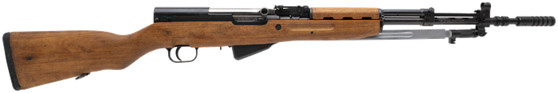
Semi-auto 7.62×39 with a fixed magazine; reliable and historic — Yugo/Russian prices have climbed sharply.
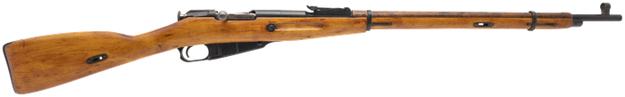
The iconic 7.62×54R bolt rifle — crude but rugged. Prices keep rising as the surplus dries up.
Straight-pull 7.5×55 with famously fine accuracy and machining — the connoisseur's bargain milsurp.
Yugoslav Mauser in 8mm; a well-made, strong-actioned classic bolt-gun introduction.
Fast-cycling .303 with a 10-round magazine — the WWII British workhorse and still a great shooter.
Light, handy .30 Carbine; new Inland / Auto-Ordnance builds sit alongside pricier wartime originals.
The WWII battle rifle in .30-06; the CMP still sells service-grade guns — “the greatest battle implement ever devised.”
No matches. Try widening the filters.